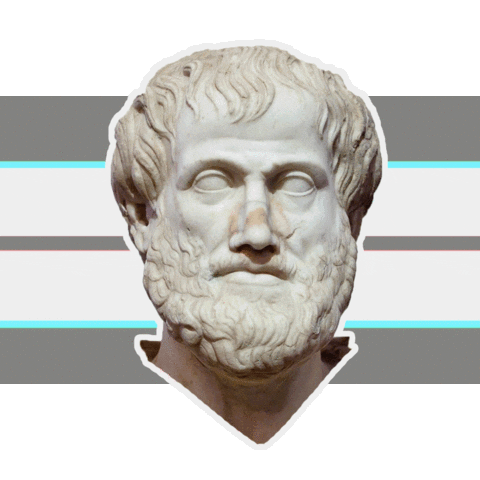

Ivan Junior
Desenvolvedor Frontend Jr.

Sobre
Oi! meu nome é Ivan de Jesus junior, seja bem-vindo(a)!
Sou uma pessoa apaixonada pela computação e tudo que a envolve. Comecei curioso para saber como as coisas são criadas e acabei entrando na área de desenvolvedor. Sempre tive o sonho de trabalhar com programação e atualmente comecei a colocar esse sonho em prática estudando HTML, CSS e JavaScript.Tenho muitos amigos que sempre me ajudam na minha trajetória em Desenvolvimento, e meus principais hobbies são jogar RPG, MOBA, Assistir series "Supernatural" e outras.